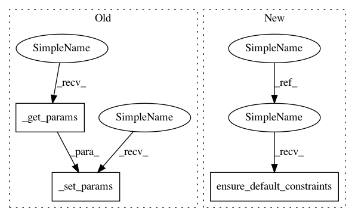

8fd8288fb88b4e14a4150bc23d3a4372d0f60de9,GPy/models/gplvm.py,GPLVM,__init__,#GPLVM#Any#Any#Any#Any#Any#Any#,29
Before Change
kernel = kern.rbf(input_dim, ARD=input_dim>1) + kern.bias(input_dim, np.exp(-2)) + kern.white(input_dim, np.exp(-2))
likelihood = Gaussian(Y, normalize=normalize_Y)
GP.__init__(self, X, likelihood, kernel, normalize_X=False)
self._set_params(self._get_params())
def initialise_latent(self, init, input_dim, Y):
if init == "PCA":
return PCA(Y, input_dim)[0]
After Change
:type init: "PCA"|"random"
def __init__(self, Y, input_dim, init="PCA", X = None, kernel=None, normalize_Y=False):
if X is None:
X = self.initialise_latent(init, input_dim, Y)
if kernel is None:
kernel = kern.rbf(input_dim, ARD=input_dim>1) + kern.bias(input_dim, np.exp(-2)) + kern.white(input_dim, np.exp(-2))
likelihood = Gaussian(Y, normalize=normalize_Y)
GP.__init__(self, X, likelihood, kernel, normalize_X=False)
self.ensure_default_constraints()
def initialise_latent(self, init, input_dim, Y):
if init == "PCA":
return PCA(Y, input_dim)[0]
In pattern: SUPERPATTERN
Frequency: 5
Non-data size: 3
Instances
Project Name: SheffieldML/GPy
Commit Name: 8fd8288fb88b4e14a4150bc23d3a4372d0f60de9
Time: 2013-06-17
Author: james.hensman@gmail.com
File Name: GPy/models/gplvm.py
Class Name: GPLVM
Method Name: __init__
Project Name: SheffieldML/GPy
Commit Name: 8fd8288fb88b4e14a4150bc23d3a4372d0f60de9
Time: 2013-06-17
Author: james.hensman@gmail.com
File Name: GPy/models/sparse_gp_regression.py
Class Name: SparseGPRegression
Method Name: __init__
Project Name: SheffieldML/GPy
Commit Name: 8fd8288fb88b4e14a4150bc23d3a4372d0f60de9
Time: 2013-06-17
Author: james.hensman@gmail.com
File Name: GPy/models/bayesian_gplvm.py
Class Name: BayesianGPLVM
Method Name: __init__
Project Name: SheffieldML/GPy
Commit Name: 8fd8288fb88b4e14a4150bc23d3a4372d0f60de9
Time: 2013-06-17
Author: james.hensman@gmail.com
File Name: GPy/models/mrd.py
Class Name: MRD
Method Name: __init__
Project Name: SheffieldML/GPy
Commit Name: 8fd8288fb88b4e14a4150bc23d3a4372d0f60de9
Time: 2013-06-17
Author: james.hensman@gmail.com
File Name: GPy/models/gp_regression.py
Class Name: GPRegression
Method Name: __init__